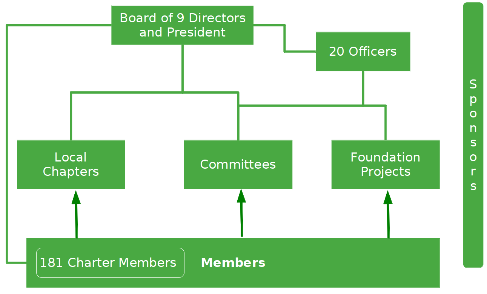
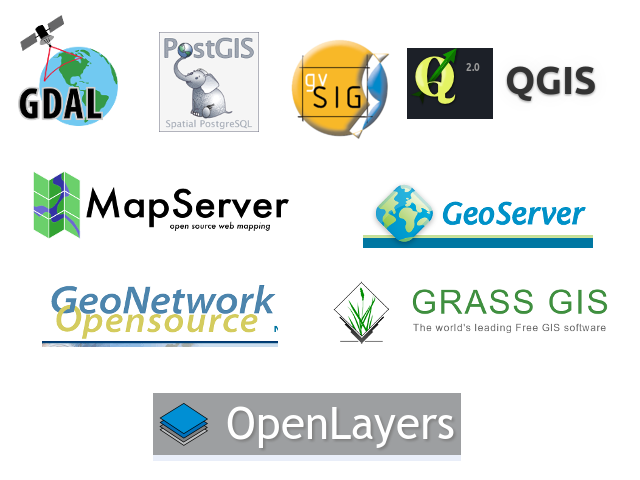
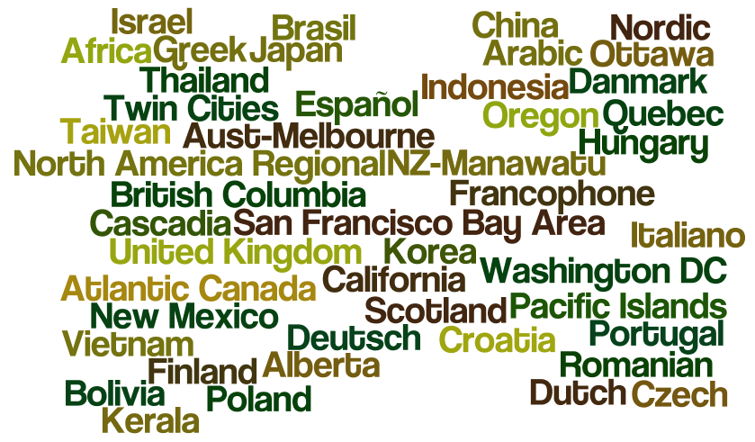
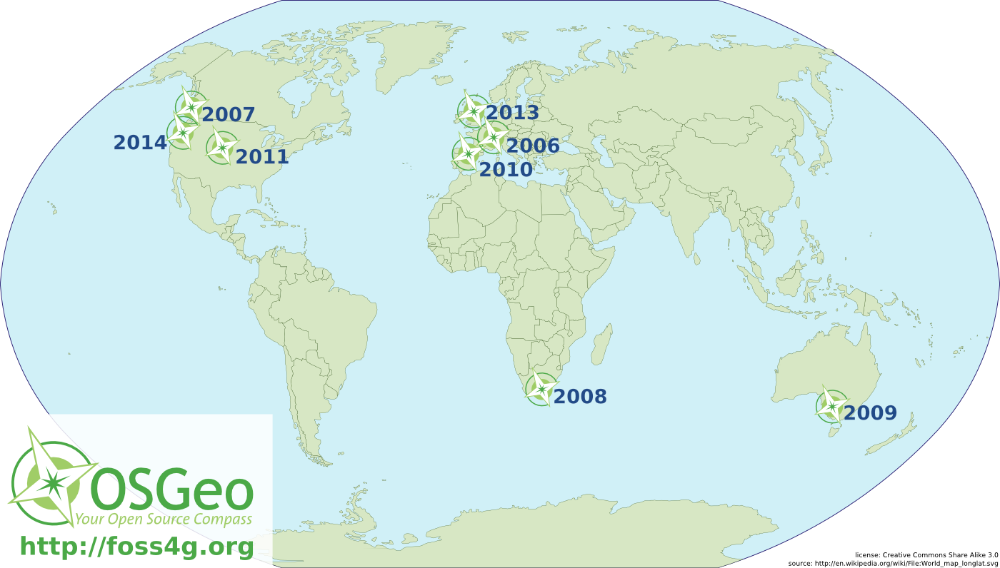
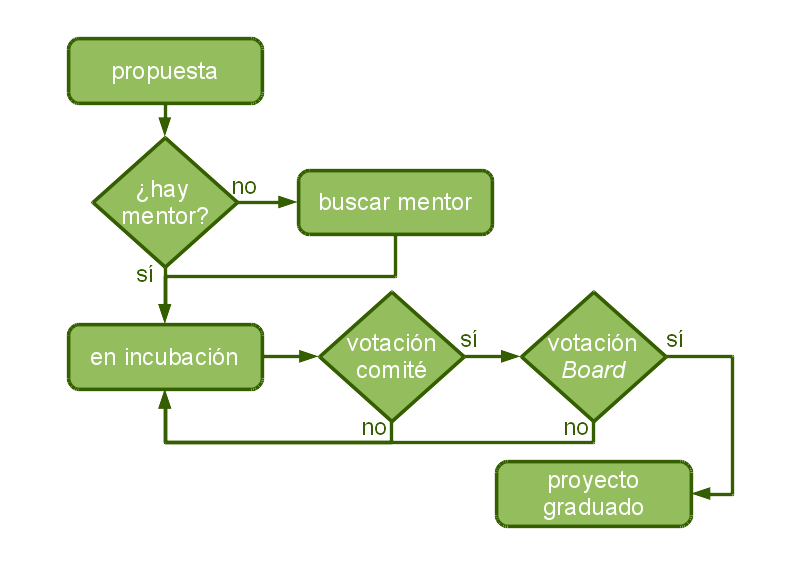

Colaboración en sofware libre geoespacial
Agenda
- ¿Qué es OSGeo?
- Incubación
- Otras colaboraciones
- Conclusiones
Qué es OSGeo
- Fundación para el SL geoespacial /www.osgeo.org
- Organización sin ánimo de lucro (Delaware, EEUU)
- Desde febrero 2006
- Opera de forma similar a la fundación Apache
- Todo el trabajo es voluntario
Misión
«Apoyar el desarrollo de software libre geoespacial y promocionar su uso»
Objetivos
- Proporcionar recursos a los proyectos
- Proporcionar una imagen común de calidad
- Promocionar el uso de los proyectos en la
industria y la educación - Asegurar que el software es accesible a los usuarios
- Fomentar el uso de estándares y datos libres
Estructura
Proyectos
Capítulos locales
- http://es.osgeo.org
- Comunidad hispano-hablante de OSGeo
- Soporte en español
- Traducción de documentos
- Promoción del software libre en eventos
- Reciente traslado de la actividad a geoinquietos
FOSS4G
... y muchos más eventos regionales y nacionales
Incubación de proyectos
- Proceso de aceptación de proyectos
de la fundación - Gestionado por un comité
- Asegurar:
- Proyecto abierto
- Comunidad diversa y activa
- Calidad técnica
Proceso de incubación
Requisitos
- ¿Es software libre?
- ¿La comunidad funciona de una forma abierta?
- ¿Se dispone del copyright?
- ¿Se siguen procesos abiertos?
- SCM, incidencias, ...
- ¿Documentación?
- de usuario, técnica, procesos organizativos, ...
- ¿Está integrada en OSGeo?
- officer, marketing, LiveDVD, ...
- ¿Se necesita la infraestructura de OSGeo?
- listas de correo, svn, trac, ...
Sinergias gvSIG/OSGeo
- Reuniones y presentaciones de OSGeo
en jornadas gvSIG - Listas de correo
- Mirror de descargas
- Blogs en planet.osgeo.org
- LiveDVD
Conclusiones
- OSGeo y gvSIG comparten objetivos
- La incubación de gvSIG ha sido
un proceso largo pero constructivo - La incubación está en su fase final
- La colaboración ha de cuidarse